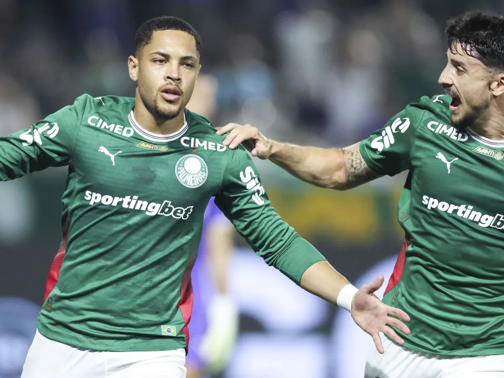
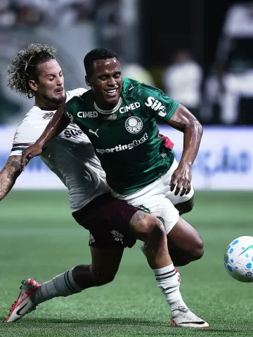
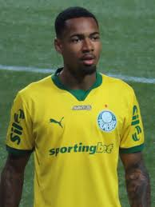
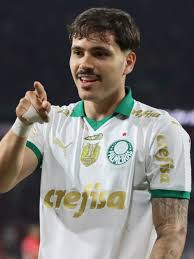
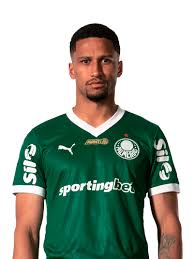
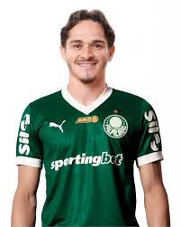

Palmeiras vence Fluminense e volta a assumir liderança do Brasileirão
Nessa noite de quarta(25/02), O palmeiras garantiu a vitória em cima do Fluminense, e volta a liderar o campeonato Brasileiro!

Palmeiras busca empate com São Paulo e segue invicto no Brasileiro Sub-20
O time Sub-20 do Verdão empatou por 3 a 3 com o São Paulo, nesta segunda-feira (23), e segue invicto no Brasileirão!

Cartão, abraços e xingamentos: como foi reencontro de Arias com Fluminense
Palmeiras e Fluminense fizeram grande jogo na noite de ontem na Arena Barueri,mas o futebol
praticado em campo
ficou em segundo plano mesmo antes de a bola rolar. O principal destaque
estava em Jhon Arias, que reencontrou seu ex-clube
após dizer que no Brasil só defenderia o
Tricolor das Laranjeiras

Palmeiras vence o Grêmio fora e mantém 100% no Brasileirão Feminino
O Palmeiras manteve o aproveitamento de 100% no Brasileirão Feminino ao fazer 2 a 1 no Grêmio na
noite desta sexta
em Porto Alegre, pela segunda rodada.
ESCALAÇÃO



